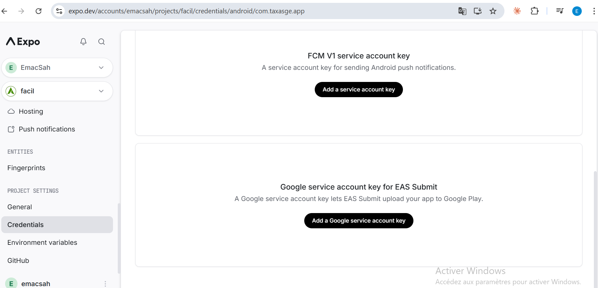
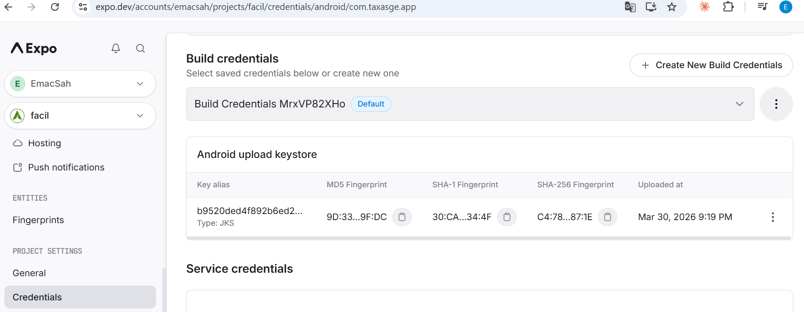
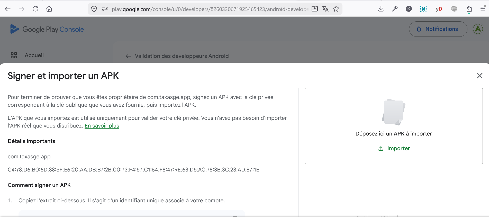

Mobile Publishing — Step-by-Step Tutorial
A complete beginner walkthrough for shipping the Facil mobile apps (citizen
com.taxasge.app and inspector com.facil.inspeccion)
to the Google Play Store. Written so anyone — even on day one of the
project — can follow it from a clean machine to a production release.
No assumed Android knowledge.
Read sections 0 through 5 the first time you publish. Once an app is live, you only need section 6 (daily release) for routine updates, and section 7 (troubleshooting) when things break. Sections 8 and 9 are dictionary-style reference: open them when a previous section points there.
- Part 0 — Introduction & vocabulary
- Part 1 — Open the four accounts (one-off)
- Part 2 — Wire the four accounts together
- Part 3 — Generate & sync the signing keystore
- Part 4 — Register the package on Play Console
- Part 5 — Pass the Android Developer Verification
- Part 6 — Daily release workflow
- Part 7 — Troubleshooting (8 common errors)
- Part 8 — Reference (secrets, env vars, paths)
- Part 9 — Glossary & FAQ
Part 0 — Introduction & vocabulary #
What does «publishing an Android app» mean?
Publishing means putting the app on Google's Play Store so end-users can search for it on their phone, install it with one tap, and receive automatic updates. Behind the scenes, three things must be true at the same time:
- The app file must be in the right format (APK for testing, AAB for production)
- The app file must be cryptographically signed with a private key only you control (so users know nobody intercepted and tampered with the file)
- You must have proven to Google that you own the package name
(the unique reverse-domain identifier, e.g.
com.taxasge.app)
Facil uses four cooperating services to make these three things happen automatically on every release:
+----------------------+ +-----------------+ +----------------------+ +-------------------+
| Your laptop | | GitHub Actions | | EAS Cloud (Expo) | | Play Console |
| - git, gh, gcloud |-->| - run linter |-->| - build the app |-->| - host the .aab |
| - the source code | | - kick off EAS | | - sign with keystore| | - distribute to |
| | | - kick off submit | - emit .apk / .aab | | end-users |
+----------------------+ +-----------------+ +----------------------+ +-------------------+
+-------------------+
| GCP Secret Mgr | stores all the secrets used by the
| - expo-token | three layers above (single source of
| - play-publisher | truth, mirrored to GitHub + EAS)
| - sentry-dsn |
+-------------------+Mini-glossary (you'll see these terms everywhere)
| Term | What it really means |
|---|---|
| APK | One Android binary file. Used for sideloading and Play Console developer-verification uploads. |
| AAB (Android App Bundle) | The publishing format Play Store wants. Google itself slices it into per-device APKs at install time. |
| Keystore | An encrypted file (.jks) holding your private signing key. If lost, you cannot publish updates — you'd have to ship a brand new app under a new package name. |
| Upload key vs app-signing key | With Play App Signing, you sign with the upload key. Google re-signs with their own app-signing key before distribution. End-users only see the latter. |
| Fingerprint (SHA-1 / SHA-256) | A short hash of the public certificate. Used to identify a key without sharing the key itself. You will paste these into Play Console / Firebase / Google Sign-In. |
| Package name | Reverse-domain identifier (e.g. com.taxasge.app). Permanent — cannot be changed once an app is published. |
| EAS | Expo Application Services. The cloud service that builds React Native / Expo apps without needing Xcode or Android Studio locally. |
| Service account (SA) | A «robot user» that authenticates with a JSON key instead of a password. Used to let scripts call Google APIs. |
| ADI token | Android Developer Identity registration token. A short string Play Console gives you, that you embed in an APK to prove you own the package name. |
| Internal / Closed / Production track | Three Play Store distribution channels in order of audience size. Internal = up to 100 testers, Closed = up to 200 testers via opt-in URL, Production = the public listing. |
- Losing the upload keystore means a new package name forever. Back it up to GCP Secret Manager on day one.
- The package name is permanent. Choose carefully.
- Google reviews of every release take 1 to 7 days. Plan your launch window.
Part 1 — Open the four accounts (one-off) #
You need four separate accounts. Open them in this order — later steps assume the earlier accounts already exist.
1.1 Google account — Play Console developer ($25 USD, one-time)
- Go to play.google.com/console and sign in with the Google account you want to own the apps. For Facil this is
kouemou.sah@gmail.com. - Click Create developer account. Choose Organization if you publish under a company; Personal if it's just you.
- Pay the $25 USD one-time fee with a credit card. The fee covers the lifetime of the account.
- Fill the developer profile: legal name, mailing address, contact email, country. The address must be valid — Google sends a verification postcard for organization accounts.
- Wait for Google to validate the account (a few minutes to a few hours).
The fee is an anti-spam measure. Without it, anyone could publish thousands of fake apps. The $25 also covers Google's identity verification of you as a developer.
1.2 Google Cloud Platform (GCP) project
- Go to console.cloud.google.com and sign in with the same Google account.
- Click the project picker at the top and New Project. Use a name like
taxasge-devfor the development / staging environment. Note the auto-generated Project ID — you'll need it everywhere (e.g.taxasge-dev, project number392159428433). - Link a billing account to the project. Most APIs we'll use are free under the daily quota, but GCP requires billing to be configured even if you never get billed.
- Enable the APIs we need:
gcloud services enable \ secretmanager.googleapis.com \ androidpublisher.googleapis.com \ cloudbuild.googleapis.com \ --project=taxasge-dev
1.3 Expo account (EAS Cloud builds)
- Go to expo.dev/signup and create an account. Facil uses
libressai@gmail.comas the personal account, with the project owned by theemacsahorganisation. - Install the CLI locally:
npm install -g eas-cli - Log in:
eas login - Create a Personal Access Token: Account Settings → Access Tokens → Create Token. Copy the token once — it's only shown at creation. We'll store it in GCP Secret Manager in Part 2.
1.4 GitHub account & repository access
- The Facil monorepo lives at
github.com/KouemouSah/taxasge. The owner adds collaborators with Write access (so they can push branches and run workflow dispatches). - Install the
ghCLI — we use it from the terminal for secrets and workflow triggers. - Log in:
gh auth loginand pick HTTPS protocol when prompted.
Part 2 — Wire the four accounts together #
The four accounts now exist but they don't trust each other. We're going to create the bridges. The pattern is always the same: GCP Secret Manager is the single source of truth for any secret; we mirror to GitHub and EAS so the relevant CI / build layer can read it.
2.1 Create the Play Developer service account
The service account (SA) is the «robot user» that lets eas submit
upload AABs to Play Console without a human typing a password.
# Create the service account itself
gcloud iam service-accounts create play-publisher \
--display-name="Play Publisher" \
--description="EAS Submit upload of AABs to Google Play" \
--project=taxasge-dev
# Generate a JSON key (keep it secret — never commit)
TMP_KEY=$(mktemp --suffix=.json)
gcloud iam service-accounts keys create "$TMP_KEY" \
--iam-account=play-publisher@taxasge-dev.iam.gserviceaccount.com \
--project=taxasge-dev
You now have a JSON file like tmp/abc.json on your machine. Two more steps:
- Store it in GCP Secret Manager (so we never lose it):
gcloud secrets create google-play-service-account \ --replication-policy=automatic \ --project=taxasge-dev gcloud secrets versions add google-play-service-account \ --data-file="$TMP_KEY" \ --project=taxasge-dev - Wipe the local copy:
rm -f "$TMP_KEY"
2.2 Invite the service account to Play Console
The SA exists in GCP but Play Console doesn't know about it yet. We «invite» it the same way you'd invite a teammate.
- Open Play Console → Users and permissions → Invite new user.
- Email field: paste the SA email exactly as it appears:
play-publisher@taxasge-dev.iam.gserviceaccount.com - App access: select the Facil app and grant the role "Manage testing tracks" only. Do not grant "Admin" — the principle of least privilege applies.
- Send the invitation. Google takes up to 24 hours to fully propagate the permission.
eas submitwill fail with "This service account has not been granted access" until it's done.
2.3 Mirror the SA JSON to GitHub Secrets
The GitHub workflow mobile-eas-submit.yml uses the SA to upload AABs. It reads the JSON from a GitHub Secret called GOOGLE_PLAY_SA_JSON_BASE64.
gcloud secrets versions access latest \
--secret=google-play-service-account \
--project=taxasge-dev \
| base64 -w0 \
| gh secret set GOOGLE_PLAY_SA_JSON_BASE64 --repo=KouemouSah/taxasgeJSON contains newlines and special characters that GitHub Secrets handle poorly. Base64 turns the file into a single ASCII string. The workflow decodes it before use.
2.4 Mirror the SA JSON to EAS
When you call eas submit directly (without going through GitHub Actions), EAS needs its own copy.
- Open expo.dev → Credentials → Android.
- Find the section "Google service account key for EAS Submit".
- Click "Add a Google service account key".
- Upload the JSON file. Save the file under your local
tmp/by running:gcloud secrets versions access latest \ --secret=google-play-service-account \ --project=taxasge-dev \ > tmp/google-play-service-account.json # Upload via the browser, then delete the local copy rm tmp/google-play-service-account.json

2.5 Mirror the Expo Personal Access Token
GitHub Actions need to talk to EAS Cloud to trigger builds. They authenticate with the EXPO_TOKEN you generated in Part 1.3.
# Save the token in GCP Secret Manager (single source of truth)
echo -n '<your-expo-personal-access-token>' \
| gcloud secrets create expo-token --replication-policy=automatic \
--data-file=- --project=taxasge-dev
# Mirror to GitHub Secret
gcloud secrets versions access latest --secret=expo-token --project=taxasge-dev \
| gh secret set EXPO_TOKEN --repo=KouemouSah/taxasgePart 3 — Generate & sync the signing keystore #
The signing keystore is the most precious file in the project. We let EAS Cloud generate it on the first build (it picks safe defaults: 27-year validity, RSA 2048 bits, SHA-256). Then we capture the fingerprints, back up the keystore, and mirror it to GitHub Actions for the fallback native build path.
3.1 Trigger the very first EAS build
On the very first eas build --platform android for a fresh
project, EAS prompts: "Generate a new Android Keystore?" Answer
Yes and let it generate. From now on, all subsequent builds
will reuse this same keystore automatically.
cd packages/mobile
eas build --profile preview --platform android --non-interactive --no-wait3.2 Capture the keystore fingerprint from expo.dev
- Wait until at least one EAS build has succeeded.
- Open expo.dev → Credentials → Android → com.taxasge.app.
- Under Build credentials, the page lists the keystore with three fingerprints:
- MD5 — legacy, rarely used
- SHA-1 — used by Firebase, Google Sign-In, FCM
- SHA-256 — used by Play Console developer verification (Part 4 / 5)
- Note the SHA-256 in your secure password manager. For Facil citizen it is currently:
C4:78:D6:B0:6D:88:5F:E6:20:AA:DB:B7:2B:00:73:F4:57:C1:64:F8:47:9E:63:D5:AC:78:3B:3C:23:AD:87:1E

3.3 Download a backup of the keystore
- From the same expo.dev page, click the menu (…) on the keystore row and choose Download keystore.
- EAS gives you the JKS file plus a credentials text snippet (alias / store password / key password).
- Move both files to a gitignored backup folder — for Facil that path is
Documentations/workflow/debug/tesoro/key/:mv ~/Downloads/@emacsah__facil-keystore.bak.jks \ Documentations/workflow/debug/tesoro/key/ mv ~/Downloads/@emacsah__facil-keystore-credentials.md \ Documentations/workflow/debug/tesoro/key/ - Verify the
.gitignorefile already protects that folder:git check-ignore -v \ Documentations/workflow/debug/tesoro/key/@emacsah__facil-keystore.bak.jks # Expected output ends with the matched gitignore rule
If even one commit pushes them to a public branch, the keystore is compromised forever. Recovery means generating a new key + new package name (the existing app cannot be updated). Treat these files like the keys to a bank vault.
3.4 Encrypt the backup into GCP Secret Manager (recommended)
base64 -w0 Documentations/workflow/debug/tesoro/key/@emacsah__facil-keystore.bak.jks \
| gcloud secrets create facil-upload-keystore-backup \
--replication-policy=automatic \
--data-file=- \
--project=taxasge-dev
gcloud secrets create facil-upload-keystore-credentials \
--replication-policy=automatic \
--data-file=Documentations/workflow/debug/tesoro/key/@emacsah__facil-keystore-credentials.md \
--project=taxasge-dev3.5 Mirror the keystore to GitHub Secrets (CI fallback)
The native fallback workflow mobile-build.yml runs Gradle
directly on a GitHub-hosted runner. It needs the keystore + 3 password
values as GitHub Secrets:
# 1) The JKS file as base64
base64 -w0 Documentations/workflow/debug/tesoro/key/@emacsah__facil-keystore.bak.jks \
| gh secret set ANDROID_KEYSTORE_BASE64 --repo=KouemouSah/taxasge
# 2) The three secrets from credentials.md
printf '<keystore-password>' | gh secret set ANDROID_KEYSTORE_PASSWORD --repo=KouemouSah/taxasge
printf '<key-alias>' | gh secret set ANDROID_KEY_ALIAS --repo=KouemouSah/taxasge
printf '<key-password>' | gh secret set ANDROID_KEY_PASSWORD --repo=KouemouSah/taxasge
# 3) Verify GitHub now lists all four secrets
gh secret list --repo=KouemouSah/taxasge | grep ANDROIDIf EAS ever regenerates the keystore (e.g. accidental deletion + recovery), re-run section 3.5 the same day. Otherwise the GitHub fallback path will silently sign with the previous key — producing APKs that look signed but get rejected by Play Console.
Part 4 — Register the package on Play Console #
With the four accounts wired and the keystore fingerprint captured, we go back to Play Console and tell Google: I want to publish an app named Facil under the package name com.taxasge.app, signed with this SHA-256.
4.1 Create the app entry
- Play Console → All apps → Create app.
- Fill the form:
- App name: Facil
- Default language: Spanish (Equatorial Guinea is the primary market)
- App or game: App
- Free or paid: Free
- Check the developer policy boxes
- Click Create app. The app is now in Brouillon (Draft) state.
4.2 Set the package name
Until 2024 you'd just upload an AAB and Play Console would pick up the package name from the manifest. Today — for new developer accounts — you must declare and verify the package name in advance via the Validation des développeurs Android dialog.
- Play Console (left menu) → Validation des développeurs Android (or in English: Android Developer Verification).
- Click "Enregistrer le nom de package" / "Register package name".
- Type the exact reverse-domain identifier — for Facil citizen:
com.taxasge.app— for Inspector:com.facil.inspeccion. Permanent decision — you cannot rename later. - Save. The package now appears in the Validation list with status Brouillon.
4.3 Declare the eligible public key
Google must know which key you'll be signing with, so it can verify the next APK upload comes from you and not an impostor.
- From the Validation list, open the
com.taxasge.appentry. - Click "Sélectionnez une clé publique éligible".
- Paste the SHA-256 you captured in section 3.2:
C4:78:D6:B0:6D:88:5F:E6:20:AA:DB:B7:2B:00:73:F4:57:C1:64:F8:47:9E:63:D5:AC:78:3B:3C:23:AD:87:1E - Save. The page now shows your fingerprint as "Éligible".
Triple-check the SHA-256 matches the one shown on expo.dev → Credentials → Android. A typo of one byte means every future upload will be silently rejected.
Part 5 — Pass the Android Developer Verification #
Before any release track unlocks, Google needs concrete proof that you
control the signing key for com.taxasge.app. The proof is a
single APK that contains a token Google gave you and is
signed with the eligible key. Google will compare both, and if
they match, the package is verified for life.
5.1 Get the ADI token
- From the Validation page for
com.taxasge.app, click "Signer et importer un APK". - Google displays a panel titled "Comment signer un APK". Step 1 shows a unique snippet, e.g.
CXZYNVIZWNFLAAAAAAAAAAAAAA. This is your ADI token. Copy it. - The dialog also lists the file path where the token must live:
assets/adi-registration.properties.
5.2 Embed the token via the with-adi-registration Expo plugin
Hand-editing the generated android/ folder is brittle —
expo prebuild would wipe the change. We use a
config plugin that runs at every prebuild and writes the
token to the right path.
Facil ships the plugin under packages/mobile/plugins/with-adi-registration.js:
const { withDangerousMod } = require('@expo/config-plugins');
const fs = require('fs');
const path = require('path');
const DEFAULT_TOKEN = 'CXZYNVIZWNFLAAAAAAAAAAAAAA'; // ← the snippet from Play Console
module.exports = function withAdiRegistration(config) {
return withDangerousMod(config, ['android', async (cfg) => {
const token = (process.env.ADI_REGISTRATION_TOKEN || DEFAULT_TOKEN).trim();
if (!token) return cfg;
const dir = path.join(cfg.modRequest.platformProjectRoot, 'app', 'src', 'main', 'assets');
fs.mkdirSync(dir, { recursive: true });
fs.writeFileSync(path.join(dir, 'adi-registration.properties'), token + '\n');
return cfg;
}]);
};
The plugin is registered in packages/mobile/app.json:
{
"expo": {
"plugins": [
// … other plugins …
"./plugins/with-adi-registration"
]
}
}
The plugin tries the env var ADI_REGISTRATION_TOKEN first
(so you can override per environment), then falls back to
DEFAULT_TOKEN. After verification, the token can no longer
be used by anyone else (Google ties it to your signing key + package),
so committing the constant is acceptable.
5.3 Build the verification APK
Trigger an EAS preview build (preview profile produces an APK; production produces an AAB).
gh workflow run mobile-eas-build.yml \
--repo=KouemouSah/taxasge \
-f profile=preview \
-f platform=android
Watch the build at
expo.dev → Builds.
Allow ~25 minutes (often less). When status flips to FINISHED,
download the artifact (a .tar.gz containing three APKs:
arm64-v8a, armeabi-v7a, universal).
5.4 Verify the APK locally before uploading
Save yourself a Play Console round-trip: run the bundled signature checker.
python packages/backend/scripts/verify_apk_signature.py \
/path/to/app-arm64-v8a-release.apk
# Expected output, line by line:
# v2: cert 814 bytes
# SHA-1 : 30:CA:7A:88:…
# SHA-256 : C4:78:D6:B0:6D:88:…
# -> matches Facil citizen registered key
# ADI token : CXZYNVIZWNFLAAAAAAAAAAAAAA (matches expected)
#
# RESULT: READYIf RESULT is NOT READY, fix the underlying cause (wrong key, missing token) before uploading — otherwise Play Console will reject silently or with a cryptic message.
5.5 Upload to Play Console
- Back on the "Signer et importer un APK" dialog (Part 5.1).
- Drag-and-drop
app-arm64-v8a-release.apkinto the upload zone, or click Importer. - Google parses the APK, checks signature + token. Successful flows show a green confirmation. Failures show the error from Part 7.
- Once the green banner appears, the package is verified for life. The Test interne sidebar entry now appears for this app.

Part 6 — Daily release workflow #
With the package verified, every subsequent release is much simpler. Six steps from a green branch to an internal-tester install.
- Bump the version locally.
cd packages/mobile # In app.json, increment expo.version. The Android versionCode auto-increments # on production builds (eas.json: production.autoIncrement = true). git add app.json git commit -m "chore(mobile): bump app version to 1.0.6" - Push to develop (this is a SHARED operation — confirm before running).
git push origin developThe push triggers
auto-tag-mobile-inspector.yml, which creates av<next-patch>tag. The tag firesmobile-eas-build.ymlwith profile=production, which produces an AAB. Allow ~25 min. - Watch the build.
EXPO_TOKEN=$(gcloud secrets versions access latest \ --secret=expo-token --project=taxasge-dev) curl -s -H "Authorization: Bearer $EXPO_TOKEN" \ -H "User-Agent: eas-cli" \ -H "Content-Type: application/json" \ -X POST https://api.expo.dev/graphql \ -d '{"query":"query{app{byFullName(fullName:\"@emacsah/facil\"){builds(limit:3,offset:0){id status buildProfile gitCommitHash artifacts{applicationArchiveUrl}}}}}"}' \ | jq - Submit to internal track. Once the production build is FINISHED:
gh workflow run mobile-eas-submit.yml \ --repo=KouemouSah/taxasge \ -f track=internal - Soft-launch on real devices for 24h via the internal-tester opt-in URL.
- Promote to production in Play Console → Production → Promote release. Google reviews the upload (1 to 7 days), then ships it to all users.
6.1 One-off preview APK (for sideloading without Play Store)
gh workflow run mobile-eas-build.yml \
--repo=KouemouSah/taxasge \
-f profile=preview -f platform=android
# … or directly:
cd packages/mobile && eas build --profile preview --platform android --non-interactive --no-wait6.2 Native fallback (when EAS quota is exhausted)
The free EAS plan is capped at 30 builds / month. If you hit the cap, the GitHub native workflow can build a signed APK on a GitHub-hosted runner using the keystore you mirrored in section 3.5:
gh workflow run mobile-build.yml \
--repo=KouemouSah/taxasge \
-f build_type=release
Artifacts land under Actions → Artifacts with names like
facil-apk-develop-<sha>. Same upload key, same fingerprint,
interchangeable with EAS output.
Part 7 — Troubleshooting #
7.1 "The uploaded APK does not have the required token file"
The APK is missing assets/adi-registration.properties. Most
likely the build predates the addition of the
with-adi-registration plugin in app.json. Trigger
a fresh EAS build from a commit that contains the plugin (you can verify
with git log -- packages/mobile/app.json).
7.2 Play Console rejects the upload silently
Almost always a signing-key mismatch. Run:
python packages/backend/scripts/verify_apk_signature.py /path/to/app.apkIf the SHA-256 doesn't match what Play Console expects (Part 4.3), the most likely cause is that EAS regenerated the keystore. Two fixes:
- Re-declare the new SHA-256 on Play Console → "Changer de clé", OR
- Restore the original keystore from your GCP backup secret (Part 3.4) and ask EAS support to re-import it.
7.3 CI APK signed with the Android debug key (FA:C6:17:45…)
Symptom: APK fingerprint starts with FA:C6:17:45…, the
Android default debug keystore. Means the
ANDROID_KEYSTORE_BASE64 + 3 password secrets are missing or
stale on GitHub. mobile-build.yml now fails fast
on this since commit afffdfe4; if you see the failure mention
"silently fall back to debug signing", re-run section 3.5.
7.4 EAS quota exhausted
Free EAS Production plan = 30 builds / month / org. Three options:
- Wait for the next billing cycle (resets on the 1st)
- Upgrade the EAS plan (paid tiers raise / remove the cap)
- Use the native fallback path (section 6.2). Same artifact, same key.
7.5 expo prebuild --clean wiped my Android customisations
Facil commits the android/ folder (non-CNG mode); it is the
source of truth. Never run --clean —
it deletes hand-edited build.gradle, the ADI token, custom
icons. Use npx expo prebuild --no-install instead. The CI
workflow mobile-build.yml was hardened to drop
--clean in commit afffdfe4.
7.6 eas submit: "This service account has not been granted access"
Two possible causes:
- The SA was just invited and Google hasn't finished propagating the permission. Wait up to 24 h.
- The SA was revoked or has insufficient role. Open Play Console → Users and permissions; the SA email must appear with "Manage testing tracks".
Verify the JSON key still corresponds to that SA:
gcloud secrets versions access latest \
--secret=google-play-service-account \
--project=taxasge-dev | jq '.client_email'
# Expected: "play-publisher@taxasge-dev.iam.gserviceaccount.com"7.7 Production build fired from a docs-only push
auto-tag-mobile-inspector.yml reacts to every push to
develop that touches the mobile / inspector source tree. To
prevent the cascade on a single push:
- Edit the workflow's
pathsfilter to skip the change you're making (e.g. add!packages/mobile/plugins/**). - Or delete the side-effect tag right after the push to cancel the in-flight build:
git push origin :v1.0.7 # delete the tag remotely
7.8 iOS profile fails with "no Apple credentials"
iOS is intentionally gated off in V1 — expected. To enable it:
- Provision the Apple Developer Program ($99 / year, organization or personal).
- Generate an App Store Connect API key (
.p8). - Run
eas credentials --platform iosfrompackages/mobileand upload the key. - Set the repo variable
MOBILE_BUILD_PLATFORM=all. The workflow honours it on the next tag push.
Part 8 — Reference #
8.1 GitHub Secrets
| Secret | Sensitive? | Source | Consumer workflow |
|---|---|---|---|
EXPO_TOKEN | Yes | GCP secret expo-token | mobile-eas-build.yml, inspector-build.yml, mobile-eas-submit.yml |
GOOGLE_PLAY_SA_JSON_BASE64 | Yes | GCP secret google-play-service-account (base64) | mobile-eas-submit.yml |
ANDROID_KEYSTORE_BASE64 | Yes | EAS-managed keystore (base64) | mobile-build.yml |
ANDROID_KEYSTORE_PASSWORD | Yes | EAS keystore credentials | mobile-build.yml |
ANDROID_KEY_ALIAS | Yes | EAS keystore credentials | mobile-build.yml |
ANDROID_KEY_PASSWORD | Yes | EAS keystore credentials | mobile-build.yml |
ADI_REGISTRATION_TOKEN | No | Play Console verification dialog (optional override) | mobile-build.yml |
FIREBASE_ANDROID_APP_ID | No | Firebase console | Future Crashlytics integration |
8.2 GCP Secret Manager (canonical source of truth)
| Secret | Project | Purpose |
|---|---|---|
expo-token | taxasge-dev | Expo Personal Access Token (build / submit) |
google-play-service-account | taxasge-dev | JSON key of the play-publisher@ SA |
facil-upload-keystore-backup | taxasge-dev | Encrypted backup of the EAS keystore (recovery) |
facil-upload-keystore-credentials | taxasge-dev | Backup of the keystore password / alias / key password |
sentry-auth-token | taxasge-dev | Sentry CLI sourcemap upload |
sentry-dsn-mobile | taxasge-dev | React Native Sentry DSN (mirrored to EAS env) |
logrocket-app-id | taxasge-dev | LogRocket session replay app id |
8.3 EAS environment variables
Manage with the CLI from packages/mobile/:
# Plain text variable, all environments
eas env:create --name EXPO_PUBLIC_API_URL \
--value https://taxasge-backend-staging-392159428433.us-central1.run.app \
--visibility plaintext \
--environment preview --environment production
# Sensitive (read in build logs as ***)
eas env:create --name SENTRY_AUTH_TOKEN --value <token> --visibility sensitive \
--environment preview --environment production
# Secret (never readable, only consumable by the build)
eas env:create --name EXPO_PUBLIC_SENTRY_DSN --value <dsn> --visibility secret \
--environment preview --environment production| Variable | Visibility | Environments | Purpose |
|---|---|---|---|
EXPO_PUBLIC_ENV | plain | dev / preview / prod | Distinguishes runtime environment in app code |
EXPO_PUBLIC_API_URL | plain | preview / prod | Backend Cloud Run URL |
EXPO_PUBLIC_LOGROCKET_APP_ID | plain | preview / prod | LogRocket session replay app id |
EXPO_PUBLIC_BUILD_VERSION | plain | preview / prod | $EAS_BUILD_GIT_COMMIT_HASH placeholder |
EXPO_PUBLIC_SENTRY_DSN | secret | preview / prod | React Native Sentry DSN |
SENTRY_ORG / SENTRY_PROJECT | plain | preview / prod | Sourcemap upload target |
SENTRY_AUTH_TOKEN | sensitive | preview / prod | Sourcemap upload auth (handled by EAS, not by GitHub Actions) |
ADI_REGISTRATION_TOKEN | plain | preview / prod (optional) | Override the hardcoded ADI token (rare) |
8.4 GitHub workflows
| Workflow | Trigger | Output |
|---|---|---|
mobile-eas-build.yml | Manual dispatch or tag v*.*.* | EAS-Cloud APK or AAB on expo.dev |
mobile-eas-submit.yml | Manual dispatch or after a successful production build | AAB pushed to Play Console internal track |
mobile-build.yml | Push to develop / main + tag + manual | Native Gradle APK + AAB (fallback path) |
auto-tag-mobile-inspector.yml | Push to develop touching mobile / inspector source | Auto-creates v<next-patch> tag → cascade |
inspector-build.yml | Manual dispatch or inspector-v*.*.* tag | EAS Cloud APK / AAB for the inspector app |
inspector-ci.yml | Push / PR with inspector changes | TS + lint gate |
8.5 Repository paths
| Path | Role |
|---|---|
packages/mobile/app.json | Expo manifest (Facil citizen) |
packages/mobile/eas.json | EAS build / submit profiles |
packages/mobile/android/app/src/main/assets/adi-registration.properties | ADI token (committed copy as defensive backup) |
packages/mobile/plugins/with-adi-registration.js | Config plugin re-emitting the token at every prebuild |
packages/inspector/{app.json,eas.json,plugins/with-adi-registration.js} | Inspector counterpart, ADI placeholder |
packages/backend/scripts/verify_apk_signature.py | Pure-Python APK signature + ADI token verifier (no Java) |
.github/workflows/mobile-eas-build.yml | Canonical EAS Cloud build |
.github/workflows/mobile-eas-submit.yml | eas submit automation |
.github/workflows/mobile-build.yml | Native Gradle fallback build |
.github/workflows/auto-tag-mobile-inspector.yml | Push-to-tag side-effect |
.claude/plans/MOBILE_PHASE_10_*.md | Phase 10 publication plans & bilans |
Documentations/workflow/debug/tesoro/key/ | Local-only keystore + credentials backup (gitignored) |
8.6 Cheat sheet
# Trigger a preview APK build
gh workflow run mobile-eas-build.yml --repo=KouemouSah/taxasge \
-f profile=preview -f platform=android
# Trigger production AAB submit to internal track
gh workflow run mobile-eas-submit.yml --repo=KouemouSah/taxasge -f track=internal
# Native fallback (when EAS quota exhausted)
gh workflow run mobile-build.yml --repo=KouemouSah/taxasge -f build_type=release
# Re-sync GitHub keystore secret with EAS-managed keystore
base64 -w0 @emacsah__facil-keystore.bak.jks \
| gh secret set ANDROID_KEYSTORE_BASE64 --repo=KouemouSah/taxasge
# Inspect the latest 5 EAS builds (status + artefact URL)
EXPO_TOKEN=$(gcloud secrets versions access latest --secret=expo-token --project=taxasge-dev)
curl -s -H "Authorization: Bearer $EXPO_TOKEN" -H "User-Agent: eas-cli" \
-H "Content-Type: application/json" -X POST https://api.expo.dev/graphql \
-d '{"query":"query{app{byFullName(fullName:\"@emacsah/facil\"){builds(limit:5,offset:0){id status buildProfile gitCommitHash artifacts{applicationArchiveUrl}}}}}"}' | jq
# Verify an APK signing fingerprint locally (no Java required)
python packages/backend/scripts/verify_apk_signature.py path/to/app.apk
# Retrieve the SA JSON for one-off manual upload to EAS
gcloud secrets versions access latest \
--secret=google-play-service-account \
--project=taxasge-dev > tmp/sa.json
# … upload to expo.dev/credentials/android, then:
rm tmp/sa.jsonPart 9 — Glossary & FAQ #
9.1 Mini-FAQ
Why does Google charge $25 just to publish?
It's an anti-spam measure. It also funds the manual review of every release.
Can I change the package name later?
No. Once published, com.taxasge.app is permanent. Changing it means publishing a new app.
What happens if I lose the upload keystore?
You cannot publish updates. You must publish a new app under a different package name — existing users won't get auto-updated. Always back up to GCP Secret Manager.
Why does Play Console need an APK for verification but an AAB for distribution?
The verification flow is just an ownership check — an APK is simpler to validate (single binary, single signature). For distribution, AAB lets Google re-package per device, saving end-users bandwidth.
Why do we have a fallback native build path AND EAS Cloud?
EAS quota is finite (30 builds/month free). If we hit the limit, the GitHub native runner can produce the same signed artifact. Both paths use the same upload key.
How long does Google take to review a release?
Internal track: minutes. Closed / production: 1 to 7 days. First release of a new app: often closer to 7.
What's the difference between «upload key» and «app-signing key»?
With Play App Signing enabled (default), you sign every upload with the upload key (the one we manage in EAS). Google then re-signs with their internal app-signing key before pushing to users. End-users only see the latter; you can rotate the upload key any time without breaking installs.
9.2 Related documentation
- Deployment & Operations — backend Cloud Run + Firebase Hosting CI/CD
- Security Architecture — JWT, RBAC, audit logging
- LogRocket Observability — mobile session replay
.claude/plans/MOBILE_PHASE_10_PUBLISH_PLAYSTORE_MASTER.md— per-phase implementation plan.claude/plans/MOBILE_PHASE_10_D_SIGNING_KEYS.md— canonical signing keys reference